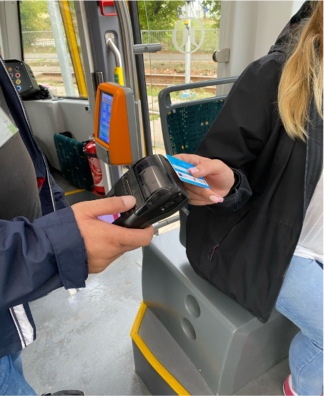
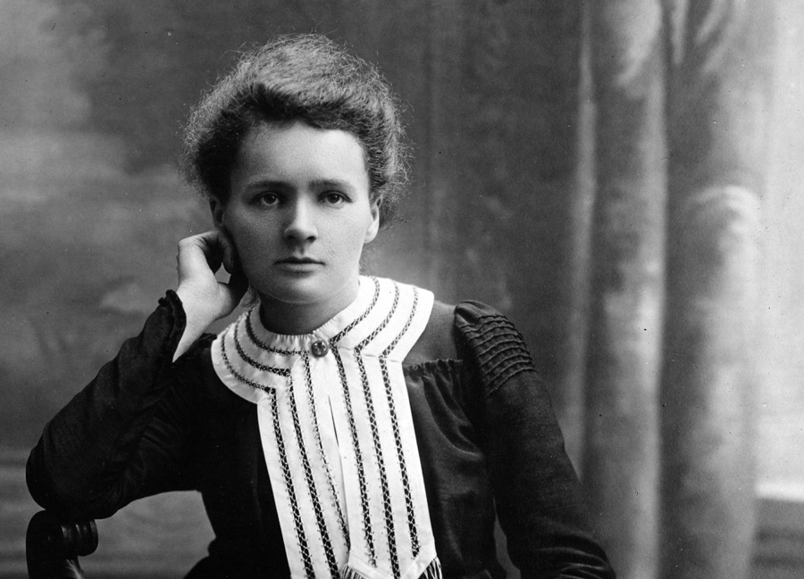
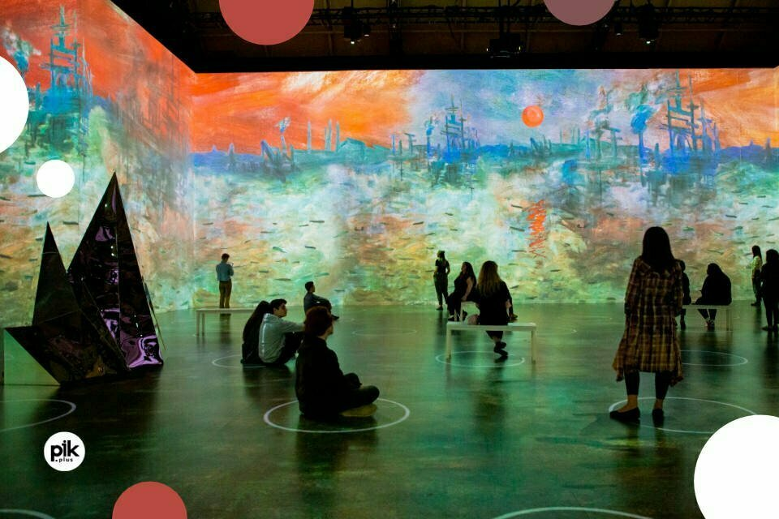

Сенсація!!!
В цьому циклі "Рівність та різність" група уроку артс.гібрид поїхала в музей Пікассо. Та на поверненні з музею до школи скандально відому редакторку газети «UPdates», одного з розробників сайту школи, та вчителя, що побажав залишитись анонімним ОШТРАФУВАЛИ, бо вони НЕ ПРИДБАЛИ БІЛЕТУ 😱

Latest News
04.09 Відкриття школи Sapiens UP у Варшаві
У цей день відкрилася наша прекрасна школа, у якій кожен з вас навчається. Спершу, всі трохи соромилися одне одного, та вже на наступний день були як рідні.
В цей день ми познайомилися з більшістю т'юторів та вчителів, ознайомилися з базовими правилами та потихеньку налаштовувалися на те, що нас очікувало.
12.10 Похід до музею Марії Склодовської-Кюрі
Хто ж така Марія Кюрі і що ж ми дізналися в музеї? Народилася Марія в Варшаві, вона польська та французька вчена, хімік та фізик. Музей, присвячений ній був збудований в її ж квартирі,
в якій пані Кюрі жила все своє дитинство. В тому музеї учні побачили різноманіття приладів для радіоактивних речовин та її реконструйований кабінет.

Предмет "Соціальні науки"
Цього уроку майже нема в інших школах, що є великим упущенням. Соціальні науки це базовий курс, на якому ми проходимо все, що варто знати про суспільство.
Social science включає в себе багато предметів: філософія, релігія, право, антропологія і держава та влада. На уроках ми філосовствуємо, дискутуємо на різні теми, та виконуємо цікаві завдання.
Під кінець цього захоплюючого та насиченого циклу у нас відбулась презентація всіх проєктів! І зараз ми, репортери, детальніше розповімо про усі проєкти, які нашим школярам вдалось успішно здати цього циклу:
ПРОЄКТ "ІЗОЛЯТОР"
Учасники проєкту:
Катерина Россинська, Поліна Девченко, Марія Садова, Кіра Валуйська
Ментор:
Олександра Кучукова
Учасниці проєкту організували тиху кімнату, в якій кожен учень може знайти хвилинку тиші для себе. Учні обрахували бюджет та купили всі потрібні меблі,
враховуючи побажання наших школярів. Тепер, кожен може відчути спокій у цій кімнаті коли тільки захоче!
ПРОЄКТ "АЛЬТЕРНАТИВНІ ПОСТЕРИ НА КІНОФЕСТИВАЛЬ"
Учасники проєкту:
Софія Доценко, Валерія Заболотна, Аріна Буря, Мілена Самсонюк
Ментор:
Марʼя Єрмагабметова
Учасниці цього проєкту запроектували 8 альтернативних плакатів до фільмів кінофестивалю "UKRAINA!". Кожна учасниця зробила по два постери, та до всіх зроблено описи в трьох мовах: українською,
польською та англійською. Ці постери можна подивитись у коммон спейс на виставі під назвою "Movies through our eyes".

ПРОЄКТ "Ш.О? (шкільні організації)"
Учасники проєкту:
Тарас Гринюк, Мілена Самсонюк, Альона Бурлова, Сергій Цвілодуб
Ментор:
Ольга Добжинська
Учасники Ш.О? зорганізували структуру школи. Вони створили шкільну раду в якій будуть: президент, асистент та представники навчальних планів (hybrid, ukrainian, innovative).
Вже напочатку наступного циклу відбудуться вибори! Тепер ви можете прочитати статут Ш.О? у електронній версії, або у фізичній в декількох екземплярах, які знаходяться у просторі школи.
ПРОЄКТ "ВЕЧІРКА HALLOWEEN"
Учасники проєкту:
Денис Бровко, Іван Кобяковський, Данило Бурлов, Георгій Данилов, Марк Фін
Ментор:
Варвара Калюжна
Найостаннішими проєкт захищали учні які створили вечірку хелловін. Після усіх презентацій прийшов час святкування! Учні організували конкурс на костюмів, квест,
фільм та замовили піцу для наших школярів. Ледь не цілу ніч перед івентом учні готували простір нашої школи та прикрашали хелловінськими прикрасами!

Саме так справились учні зі своїми першими проєктами цього навчального року.
Автор текстів : Денис Бровко
Редактор : Поліна Левченко
Impressive Monet & the impressionist
22 вересня наші школярі пішли на виставу "Impressive Monet & the impressionist.
Monet, renoir, degas & friends". Вистава ця відбулася у арт боксі. Арт бокс — це простора кімната,
у якій на стінах рефлектори показують картини.
Весь простір заповнений графікою
картин Моне, вони рухаються і виглядають просто казково!
Зранку ми виїхали на міському транспорті на локацію — вистава знаходиться в Fabryce Noblina.
Це був дуже цікавий досвід для наших учнів! Неймовірно атмосферне та спокійне місце,
де кожен мав змогу отримати фотографію
зробленою пані Олександрою на професійний фотоапарат.

Спеціалізація "Математика та фізика"
І це ще одна спеціалізація. Навіщо ж нам така спеціалізація? А все тому,
що нашим учням не вистачає математики в оффлайн форматі,
і багатьом це дійсно цікаво.
Учні вивчаюсь математику та фізику не в теорії,
а на практиці, плюс це все англійською мовою!
Спеціалізація "Біотехнологія"
Остання з чотирьох спеціалізацій, але точно не остання по насиченості! Що ж це таке? Це — біологія в професійній лабораторії польського університету.
Там навчають того, що не розкаже звичайний підручник.
На першому ж занятті всіх одягнули у халати і учні зайнялися готуванням справжнісіньких духів!